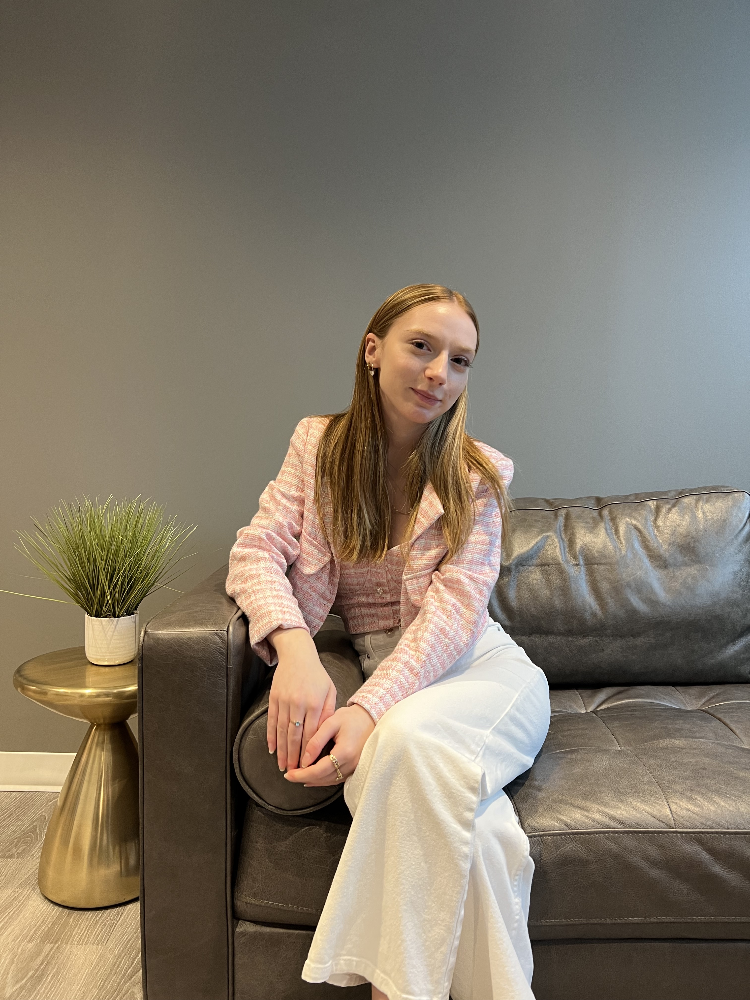

|  |
My name is Audrey Whitman, I am a student at the University of Waterloo, enrolled in the Global Business and Digital Arts program. I have finished my 2B term and have learned so much this semester. I have created this website using HTML and CSS as an online resume detailing some of my skills that I've perfected over the last four months. Below are links to my instagram account, email and linkedin account. I have highlighted my work in website design, my GBDA201 course, and my GBDA203 course throughout the site. I'd love for you to explore my work, and to take this opportunity to Work With Me. I grew up in a very small town, close to the Lake. Coming to Waterloo to begin my undergraduate degree was a big adventure for me and I have loved my experiences both on main campus and at the Stratford Campus of Interaction and Design. I have made meaningful relationships throughout my time in university both with fellow students and with my professors. I am proud to be a University of Waterloo student. Moving into my design work; I think of myself as a story teller, which is a huge part of my design process. Being in GBDA has taught me how important every piece of a story can be. |
|---|
|
|
|---|
Look good.Feel good.Do good. |
 |
|---|